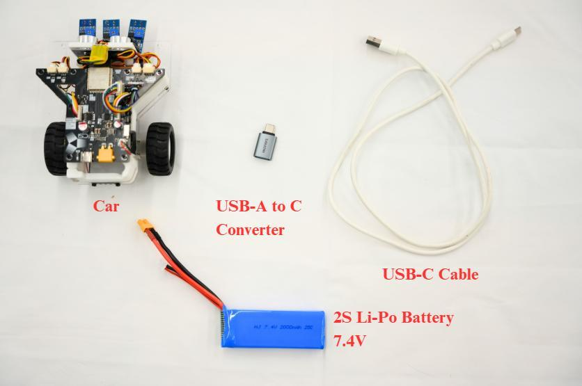
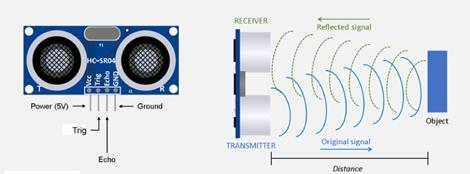

How the car moves and senses. Students build the motion stack from the battery to the PID loop,
then add distance and motion sensing, and learn to clean up noisy data with filters. The pathway
ends with a hands-on project that combines both units. Further units are planned.
Units
What is in this pathway
Motor & Motion
PWM, encoders, and PID control
Drive the motors, measure motion with encoders, and close the loop with PID control until the
car holds a straight line on its own. No prior robotics experience is assumed.

The hardware the students work on
What it covers
Power & actuation: battery packs and voltage sag, regulators and brownouts, wiring gauges, and computing a current budget for motors + logic.
Motor architectures: DC brushed motors (voltage ↔ speed, torque curves), servo actuation, and quadrature encoders (tick counts → distance and speed).
H-Bridge driver circuits: transistors as switches, the direction truth table, PWM for speed, and braking vs. coasting.
Differential drive: body speed and turn rate from the two wheel speeds; turn radius, centre of rotation, and pivot turns.
Chassis dynamics: mass distribution, centre of gravity, friction and traction, and why real robots slip.
Control: open-loop vs. closed-loop, P response and the steady-state error, then full PID with a step-by-step tuning procedure.
Give the car distance and motion senses. An ultrasonic sensor measures distance by timing sound,
and an IMU reports acceleration and rotation. Real sensor data is noisy, so the unit also covers
the filters that make it usable.

Ultrasonic sensing: send a pulse, wait for the echo
What it covers
Signal acquisition: analog vs. digital signals, ADC resolution and sampling rates; ultrasonic time-of-flight with the speed-of-sound equation; accelerometer, gyroscope, and magnetometer.
Calibration & noise reduction: noise and drift, threshold calibration against ground truth; moving averages, low-pass filters, and hysteresis.
Sensor fusion: combining a drifting gyroscope with a noisy accelerometer through the complementary filter.
Trace the chain from battery → driver → motor → motion, and budget power for it
Predict a differential-drive robot's path from its two wheel speeds
Implement and tune a PID loop that holds a commanded speed or heading
Wire a sensor to a microcontroller and convert raw readings into physical units
Diagnose noise and drift, then fix them with calibration and filters
Final hands-on project
Straight and safe. The car holds a commanded heading for two metres under PID (measured deviation under 5 cm across three runs) and stops at a set distance from an obstacle using its ultrasonic sensor. Materials in preparation.